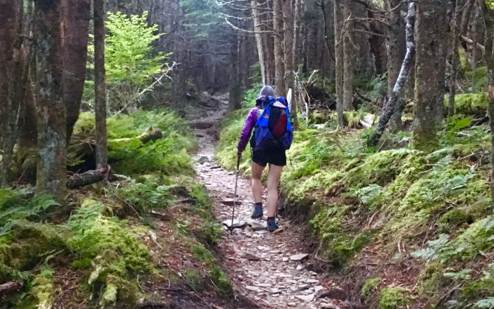
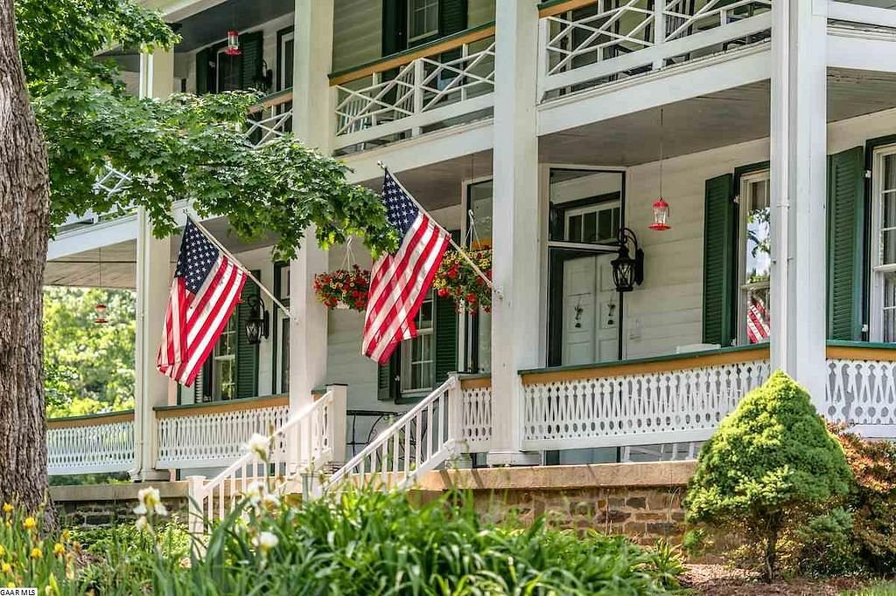
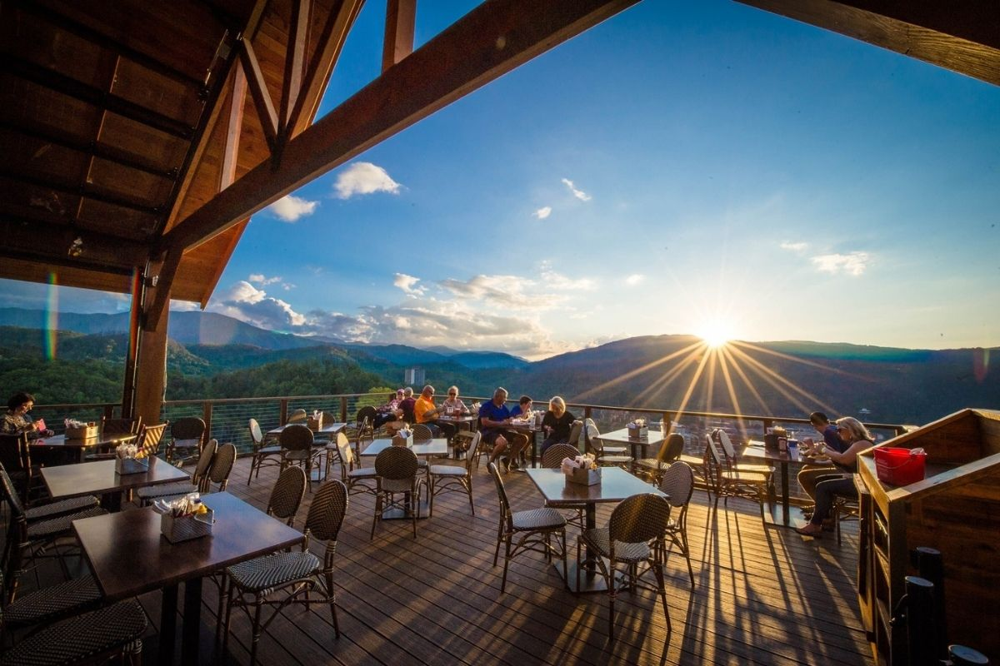

The Great Smoky Mountains are a mountain range rising along the Tennessee–North Carolina border in the southeastern United States.
What to do

- Hiking Trails There are many hiking options when staying in the Smoky Mountains
- Climb Clingmans Dome Don't miss hiking to Clingmans Dome for exceptional views of the Smokies from the top of the park's highest mountain.
- Paddle Fontana Lake A dam on the Little River forms Fontana Lake along the park’s southern border, a long, skinny lake with 240 miles of shoreline that beckon kayakers, canoeists, anglers, and stand-up paddleboarders.
Where to stay

- Buckhorn Inn East Tennesee’s classic country inn, The Buckhorn offers the grandest Smoky Mountain views of any Gatlinburg bed and breakfast.
- Quail Ridge We are located in scenic Gatlinburg, Tennessee and are members of the Smoky Mountain Bed and Breakfast Association.
- Link Text Here: A historic Bed & Breakfast, The Sidecar Inn is located in quiet and rural Sevier County.
- Airbnb Airbnb has many fun cabin options
What to eat

- The Appalachian Located in East Tennessee, farm to table restaurant provides Southern hospitality at its finest while presenting the greatest reflection and flavors of this amazing region.
- Five Oaks Farm Five Oaks Farm Kitchen welcomes hungry travelers from near and far for Southern-style breakfast and supper.
- Vivian Honest American Food with Big Flavors that Utilize the Bountiful Products of our Region and the Rich History of European Cuisine